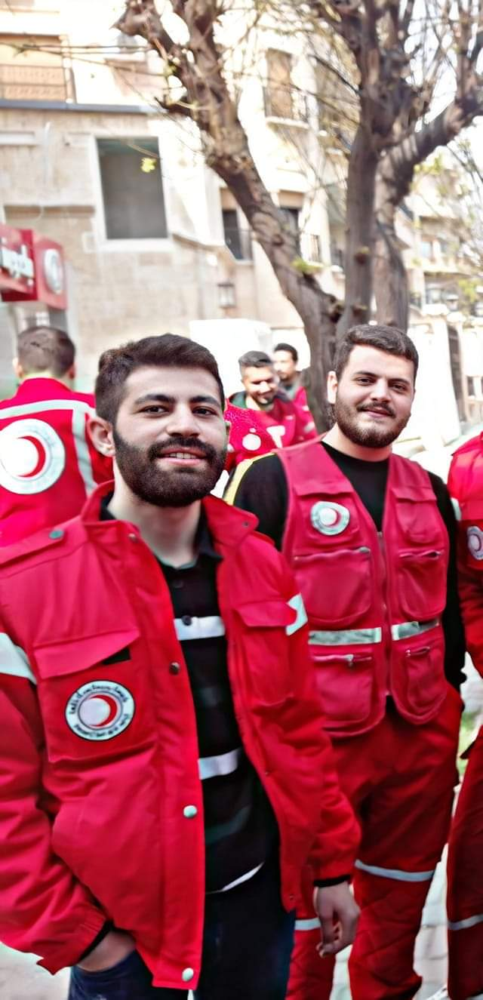
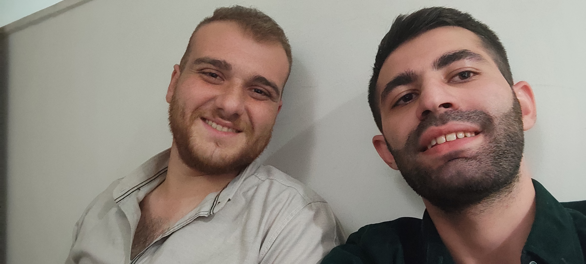

.jpg)
college
oOold days

Sarc uprising
old gold days
.jpg)
Blood brothers
.jpg)
ma only friends
.jpg)
My Career
Only me approaching
college
oOold days
Sarc uprising
old gold days
Blood brothers
ma only friends
My Career
Only me approaching
COLLEGE ERA {TOP}
.jpg) -it's been a long time 5 years in a new place went your home some day.
-the begining was like being alone in a big city no where to go !! .
-thennn you met your first colleague and you don't know that he will be your friend to the last day.
-projects homeworks new scince it's like every where just catch it if you can.
-you think it wont be over till you die (-_-) .
-my first & second year was the best to have fun.
-the third one became realy pain in the ass.
-buuut i will never surrender lol.
-the train will never stop also me till the next station.
-also at third my friends became closer to me not changable at all.
-in the middle of this chaeos the days run to the fourth year
then in the second semester i volunteered at sarc which i will talk about in another section.
-to be honest between these days i've played video games (online-local) after & before exams with my friends
playing was part of the college as u know (-_^).
-the 5th year i think something changed or i've changed it was ending of a journey u thought it wont pass
I turned into a quiet person who will listen and wont talk alot, the work changed me or the days
I dont know but realy something changed.
-every single one want to travel or run from our war.
-returning to now only one friend is near the rest with their wings are outside syria
-this was a short story of college era withot mentioning alot .
Civil Engineer Ahmad Turkamni.
-it's been a long time 5 years in a new place went your home some day.
-the begining was like being alone in a big city no where to go !! .
-thennn you met your first colleague and you don't know that he will be your friend to the last day.
-projects homeworks new scince it's like every where just catch it if you can.
-you think it wont be over till you die (-_-) .
-my first & second year was the best to have fun.
-the third one became realy pain in the ass.
-buuut i will never surrender lol.
-the train will never stop also me till the next station.
-also at third my friends became closer to me not changable at all.
-in the middle of this chaeos the days run to the fourth year
then in the second semester i volunteered at sarc which i will talk about in another section.
-to be honest between these days i've played video games (online-local) after & before exams with my friends
playing was part of the college as u know (-_^).
-the 5th year i think something changed or i've changed it was ending of a journey u thought it wont pass
I turned into a quiet person who will listen and wont talk alot, the work changed me or the days
I dont know but realy something changed.
-every single one want to travel or run from our war.
-returning to now only one friend is near the rest with their wings are outside syria
-this was a short story of college era withot mentioning alot .
Civil Engineer Ahmad Turkamni.
.jpg)
SARC SECTION {TOP}
-AS i've mentioned before at my 4th college year i became a sarc volunteer . -firstly it was a huge challenge to work and study and make balance between sarc and college. -as many students a wanted money like any person on this planet earth. then after a while sarc became part of me after graduation i went to work literally every single day. -some of them became my family we shared food drink having breakfast in spare times, working in a team lerned me that acomplishing missions need a lot of hands not only one could clap. -helping people by determine what they need & distributing food-Nonfood items was part of my team work. -ALL of that was happening as a volunteer in AL-hamdaniyah relief team. - 2 years later i've participated in (vnr) project as an assistant field officer leading 4 males & 4 females -The target of the project was doing alot of A questionnairies to the beneficiaries in Aleppo city including the countryside ,Providing team members with training, feedback, and coaching was part of my job including daily reports. -To the end of vnr project i prepared my self to getback to my old team or finding another job related to my field of study. -Then someone asked me to be a Relief team leader, to be honest i was confused about accepting the position, they encoraged me i said yes , 7 monthes was a big deal to me , -i've enjoyed each day learning what a leadership is, u have to be fair to each volunteer , giving them instructions, Take decisions related to the safety of volunteers and determine their daily tasks, preparing distribution plans , All of that would be a heavy burden without everyone's help. -My team became my friends we've built the center block by block cause it was a new team and we were the first to launch it. -After 7 months of hard working i resigned no words to say just my mission is over, thanks all, my best wishes i'm done. -I wanted to work as a civil engineer for that i'm trying to play that role now, -having my own website is a hobby i wanted to have some day and i'm doing it right now, using (html-css) which i've learnt recently.


FREINDS SECTION {TOP}
-"Friends" we need to define that word nowadays.
-As many people i do have freinds in college-work-neighborhood,
-normal places to meet normal people thats what i did.
-closest to my heart are who i spent a lot of time with,
toufic bibers hussein hussam mustafa and the smartass noooura are part of my memories.
-Backing to work friends are alot but some are in my heart others outside for sure.
-No words to be said more but i wanna say that having one or two true friends in life
would be enough in circle of friendships.
-the photos here can describe many feelings to my freinds.
-sorry i didn't find hamdaniyah breakfast pics (^_-).



CAREER SECTION {TOP}
-MY sections above may have abbreviated my career especially sarc section.
-but as a summarization i was a normal 5 years /student >>Civil Engineer/ (2015-2020),
sarc (Volunteer >>Field officer >>Team leader) for about three years & 7 months (2019-2022)
-many difficult times during war and studying period,both financial or psychological.
-none of that was easy but only by god hands the things was running.
-every one has dreams, i think making life easier to live is every engineer dream,
regardless the way of achieving it.
-learning (html-css) is now one of my hobbies thinking next in java script,
and for that purpose i launched my own website.
thanks All for spending time reading my blog.
-I will always update my blog hope you've enjoyed it,
sincerely Ahmad.